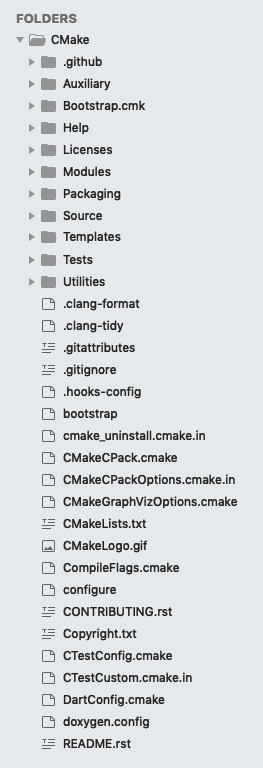

CMake

CMakeLists.txt /*.cmake 都是构建的配置文件
CMake[cross platform make]是一个跨平台的安装（编译）工具，
- 1）可以用简单的语句来描述所有平台的安装(编译过程)。
- 2）输出各种各样的makefile或者project文件，能测试编译器所支持的C++特性,类似UNIX下的automake。只是 CMake 的组态档取名为 CMakeLists.txt。
- 3）Cmake 并不直接建构出最终的软件，而是产生标准的建构档（如 Unix 的 Makefile 或 Windows Visual C++ 的 projects/workspaces），然后再依一般的建构方式使用。 这使得熟悉某个集成开发环境（IDE）的开发者可以用标准的方式建构他的软件，这种可以使用各平台的原生建构系统的能力是 CMake 和 SCons 等其他类似系统的区别之处。
功能：
CMake 可以编译源代码、制作程序库、产生适配器（wrapper）、还可以用任意的顺序建构执行档。CMake 支持 in-place 建构（二进档和源代码在同一个目录树中）和 out-of-place 建构（二进档在别的目录里），因此可以很容易从同一个源代码目录树中建构出多个二进档。CMake 也支持静态与动态程式库的建构。
“CMake”这个名字是“cross platform make”的缩写。虽然名字中含有“make”，但是CMake和Unix上常见的“make”系统是分开的，而且更为高阶。
1 | make 和cmake有什么区别？ |
执行命令： cmake CMakeLists.txt
看一下cmake的代码，里面写了什么， 建立系统、打包、创建测试环境；
&& ————————————————cmake的简单实用————————————
cmake_minimum_required(VERSION 3.12) // 这里的version要注意是当前系统的版本
项目简单实践
明天接着运行上面的例子；
CMakeList.txt 文件构建（写） 这里就是cmake的写法 【注意，写的时候不要有逗号在参数见】
好像SET这个命令有问题呀；??? 是不是我使用出现了错误还是在mac上不能够这样使用？
有关的书籍， 我们应该如何去存储？
https://cmake.org/cmake/help/v3.12/index.html 文档链接 内容如下1
2
3
4
5
6
7
8
9
10
11
12
13
14
15
16
17
18
19
20
21
22
23
24
25
26Command-Line Tools： 3个命令行
cmake
ctest
cpack
Interactive Dialogs： 交互的窗口（可视化界面）
cmake-gui(1)
ccmake(1)
Reference Manuals ： 参考手册
cmake-buildsystem(7) 主要介绍链接了系统的库内容
cmake-commands(7) 一些命令的设置
cmake-compile-features(7) 编译特色 【也就是编译指定的特点或者针对支持】
cmake-developer(7)
cmake-env-variables(7)
cmake-generator-expressions(7)
cmake-generators(7)
cmake-language(7) 语言，这个需要详细去查看
cmake-modules(7)
cmake-packages(7)
cmake-policies(7)
cmake-properties(7)
cmake-qt(7)
cmake-server(7)
cmake-toolchains(7)
cmake-variables(7)
总结： 这个项目主要是用cmake来构建代码编译打包等；有关内容，通过真实的项目来实现；
几个关键字：CMakeLists.txt Makefile make cmake
cmake的源码应该怎么样子去看，我这里还不是很懂， 先看cmake里面的CMakeLists.txt文件吧；
2、Doxygen是一种开源跨平台的，以类似JavaDoc风格描述的文档系统，完全支持C、C++、Java、Objective-C和IDL语言，部分支持PHP、C#。注释的语法与Qt-Doc、KDoc和JavaDoc兼容。Doxygen可以从一套归档源文件开始，生成HTML格式的在线类浏览器，或离线的LATEX、RTF参考手册。
Doxygen 是一个程序的文件产生工具，可将程序中的特定注释转换成为说明文件。通常我们在写程序时，或多或少都会写上注释，但是对于其它人而言，要直接探索程序里的注释，与打捞泰坦尼克号同样的辛苦。大部分有用的注释都是属于针对函数、类型等等的说明。所以，如果能依据程序本身的结构，将注释经过处理重新整理成为一个纯粹的参考手册，对于后面利用您的程序代码的人而言将会减少许多的负担。不过，反过来说，整理文件的工作对于您来说，就是沉重的负担。
知道cmake里面使用了doxygen 来生成开发文档， 这里暂时先不管了； 到时候再去研究？？？？
3、cmake项目的源代码以及配置的了解
DartConfig.cmake 文件的内容
Dart 语言链接，dart就是D语言
Dart github地址
dart 语言应用在flutter项目中
1 | Dareconfig.cmake 文件的内容： |
上面的代码块中可以查找网址:CTest的内容1
2
3
4
5
6
7
8
9
10
11
12
13
14
15
16
17
18
19
20
21
22
23
24
25
26
27
28
29
30
31
32set(CTEST_PROJECT_NAME "CMake") // 设置测试的项目名字
文档里面没有给出project name, 但是我们知道这个指定测试项目的名字了 【不过里面有个build name（也许可以替换）】
set(CTEST_NIGHTLY_START_TIME "21:00:00 EDT") //每天晚上9点钟执行
> NightlyStartTime
在夜间仪表盘模式，指定“夜间开始时间（nightly start time）”，带有确定的控制系统版本（cvs、svn），更新步骤检查软件的版本在这个时候所以，多客户端会选择一个共同的版本测试。 对于分布式版本控制不是很好定义，所以设置被忽略掉；
CTest脚本变量: CTEST_NIGHTLY_START_TIME
如果模块变量设置，则为NIGHTLY_START_TIME ，其他的是CTEST_NIGHTLY_START_TIME ；
【符合ctest的定义和书写格式】 【一会其他特殊的才会标出来】
set(CTEST_DROP_METHOD "http") // 方法使用http
> DropMethod
指定提交到dashboard服务器的方法，值可以是：cp, ftp, http, https, scp, or xmlrpc（如果cmake支持它）
同样也有脚本变量和模块变量以及其他的方式 和上面一样；
CTEST_DROP_METHOD DROP_METHOD CTEST_DROP_METHOD
set(CTEST_DROP_SITE "open.cdash.org") // 测试地址
DropSite （网址： 域名）
dashboard server的名字（ftp, http, and https, scp, and xmlrpc 的目标服务器）
CTEST_DROP_SITE DROP_SITE
set(CTEST_DROP_LOCATION "/submit.php?project=CMake") // 位置
DropLocation （位置）
服务器上面的路径
set(CTEST_DROP_SITE_CDASH TRUE)
IsCDash
判断dashboard server 是否是一个CDash 或者一个老的dashboard server 实现需求TriggerSite。
scripte 变量： CTEST_DROP_SITE_CDASH
module 变量： CTEST_DROP_SITE_CDASH
[CDash 一个测试服务器，集成了CMake， CTest,CPack](https://www.cdash.org/overview/)
这个东西怎么使用？ 以后需要使用的时候再进行使用吧？
cmake 没有指定，应该是讲所有的CMakeLists.txt /*.cmake 的文件进行建立；
CTestCustom.cmake.in 和CTestConfig.cmake 是什么关系？
in文件：是对文件进行统一的管理
CTestCustom.cmake.in 这个文件应该是对文件的同一管理的内容，也就是公共部分；
1 | CTestCustom.cmake.in |
1 | set(CTEST_PROJECT_NAME "CMake") // 项目名字 |
1 | configure 文件内容: |
1 | bootstrap： 是shell脚本，这个有时间再去看一下 【很多项目构建都会写一个引导程序来处理编译打包的逻辑】 |
1 | CompileFlags.cmake : 编译的配置 |
1 | CMakeLists.txt 真正构建cmake项目的文件 （详情细看） |
1 | CMakeGraphVizOptions.cmake 图像的选择 |
1 | CMakeCPackOptions.cmake.in 打包选项的配置 |
1 | CMakeCPack.cmake 打包的cmake |
1 | cmake_uninstall.cmake.in 卸载的cmake |
1 | .hooks-config ： 这个不知道是配置什么来的 ，不知道这个是什么 [应该是属于git的内容] |
1 | .gitignore git忽略的文件 |
1 | .gitattributes 这个配置git的属性 |
1 | .clang-tidy clang tidy 是一个静态代码分析框架 https://www.jianshu.com/p/d6e12fc51294 |
1 | .clang-format 格式样式 |
1 | Auxiliary 辅助文件夹 |
—————————————————————————————————————————————
这个项目无法再接着继续看了，因为太多东西了； 有一天写C项目的时候，在仔细去研究研究